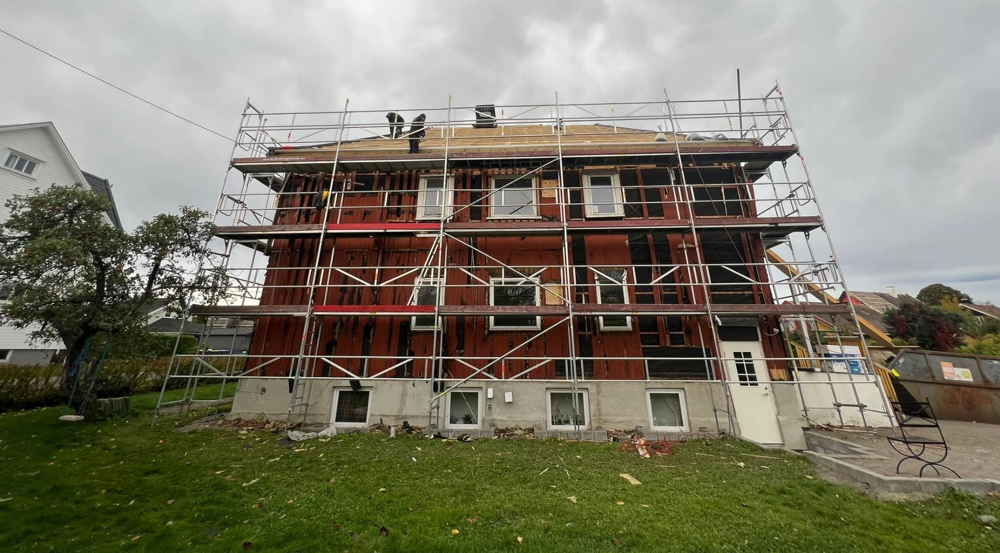
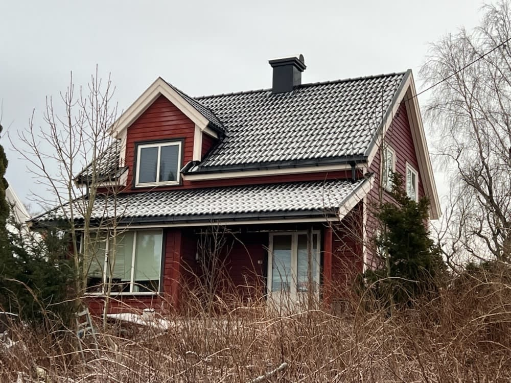

Pålitelig og sikker tømrer
Presist håndverk og solide konstruksjoner tilpasset nordiske forhold, fra råbygg til ferdig listverk.
Be om tilbud →
bygg · Nykirke
Velkommen til JP Entreprenør AS, er en solid og allsidig byggentreprenør som leverer kvalitetsarbeid fra start til slutt.
Tjenester
Presist håndverk og solide konstruksjoner tilpasset nordiske forhold, fra råbygg til ferdig listverk.
Be om tilbud →Erfarne fagfolk som koordinerer fremdriften i tett dialog med byggherre.
Be om tilbud →Sømløs overflatebehandling med slitestyrke og feilfri finish på vegger, tak og treverk.
Be om tilbud →Sømløs overflatebehandling med slitestyrke og feilfri finish på vegger, tak og treverk.
Be om tilbud →Om oss
Velkommen til JP Entreprenør AS, er en solid og allsidig byggentreprenør som leverer kvalitetsarbeid fra start til slutt.
Vi tar på oss alt fra nybygg og tilbygg til rehabilitering og oppussing, med særlig kompetanse innen våtrom og tømrerarbeid.
Med fokus på gode løsninger, trygg prosess og fornøyde kunder, hjelper vi deg å skape et hjem eller bygg som fungerer i hverdagen.
Vi er grundige med forarbeid og beskyttelse av tilliggende flater, og har vår styrke i å se helheten i et malerprosjekt.
Kvalitet i alle ledd – solid håndverk bygget for å vare i generasjoner.
Slik kunne det se ut
Byggetiden er lang, og byggherren sitter på utsiden og lurer på hvordan det går. En side med bilder, milepæler og neste steg gir trygghet — og færre telefoner om status.
Følg bygget fra første spadetak
Fra byggeplassen
Du beskriver hva du trenger, og vi svarer med hva det krever.
Vi blir enige om omfang, pris og når det skjer.
Vi gjør jobben og går gjennom resultatet med deg.
Arbeid underveis


Ordrett fra nettsiden deres
Vi vet hva som er viktig i utvendige oppussingsprosjekter i et værhardt land som Norge, og har kompetanse på valg av riktig produkter for optimal kvalitet og varighet. Vi innfrir alltid kravene til kvalitet og miljø.
Har du tomt, men ikke hus? Vi har lang erfaring med oppføring av hus og bygninger. Vi leverer nøkkelferdige prosjekter til avtalt tid og pris, og etter dine spesifikasjoner!
Går du med tanker om å bygge på huset? Vi hjelper deg med alt fra planlegging til ferdig utført arbeid. Våre erfarne håndverkere sørger for at alt blir utført etter gjeldende forskrifter.
Kontakt
Ta kontakt for en uforpliktende prat i Nykirke.
Beskriv saken, så svarer vi med hva det krever og hva det koster.
Send en henvendelse